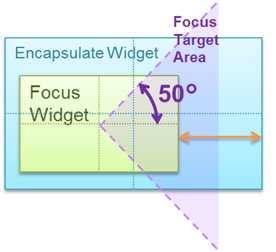
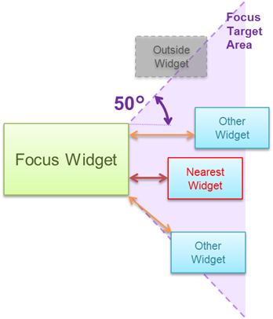

この章では、キーイベントおよびフォーカスの詳細を解説します。基本的な事項は UI Toolkit プログラミングガイド - 基本概念 の ゲームパッドによる操作 と キーイベントの配信 を参照してください。
Contents
フォーカスは方向キーを押すことで自動でウィジェットを移動します。ここでは、方向キーが押されたときに、どのウィジェットにフォーカスが移動するかを解説します。
フォーカスが移動する対象となるウィジェットは以下の全てを満たす必要があります。
- 画面内に表示されている
- Focusable プロパティが true
- 親を含むすべての Enabled プロパティが true
たとえば、親ウィジェットにクリップされて完全に見えないウィジェットや、Visible が false のウィジェットにはフォーカスは移動しません。
Focusable プロパティは親ウィジェットが false でも子ウィジェットが true であれば、この子ウィジェットにフォーカスが移動することができます。Button ウィジェットなどキー操作できるウィジェットはデフォルトで Focusable が true になっています。逆に ImageBox や Label、Panel ウィジェット、および Widget 基底クラスなどは Focusable が false になっているので、必要に応じて値を設定してください。
方向キーが押された場合、これらのウィジェットのうち、そのキーの方向にもっとも近いウィジェットにフォーカスが移ります。
次にキーの方向にもっとも近いウィジェットの探索方法を解説します。これ以降は、右キーが押された場合のみを解説しますが、その他の方向キーも同等に動作します。
距離の求め方は、現在フォーカスのあるウィジェット(以降 「フォーカスウィジェット」とします)と検索対象のウィジェットの位置関係によって以下の3種類に分類されます。
- フォーカスウィジェットの内側にあるウィジェット
- フォーカスウィジェットを内包するウィジェット
- フォーカスウィジェットと重ならないウィジェット

図1 ウィジェットの位置関係の分類
フォーカスウィジェットの内側にウィジェットが存在する場合(1)はこれらのウィジェットが優先的にフォーカスの移動対象になります。それ以外の場合は、距離が最も短いものにフォーカスが移動します。
それぞれのウィジェットの距離の求め方は以下の通りです。
フォーカスウィジェットの内側にあるウィジェット
中心点が、フォーカスウィジェットの中心から角度が上下50度の範囲（図2 の Focus Target Area）に含まれているウィジェットがフォーカスの移動対象のウィジェットになります。
フォーカスウィジェットとの中心点の距離が最も短いものがフォーカスの移動先になります。

図2 フォーカスウィジェットの内側にあるウィジェットの距離
フォーカスウィジェットを内包するウィジェット
中心点が、フォーカスウィジェットの中心から角度が上下50度の範囲（図3 の Focus Target Area）に含まれているウィジェットがフォーカスの移動対象のウィジェットになります。
右辺とフォーカスウィジェットの右辺の最短距離（図3 の矢印の距離）が最も短いものがフォーカスの移動先になります。
図3 フォーカスウィジェットを内包するウィジェットの距離
フォーカスウィジェットと重ならないウィジェット
左辺が、フォーカスウィジェットの角度が上下50度の範囲（図4 の Focus Target Area）に少し手も含まれているウィジェットのみがフォーカスの移動対象のウィジェットになります。
左辺とフォーカスウィジェットの右辺との距離（図4 の矢印の距離）が最も短いものがフォーカスの移動先になります。
ただし、同一の距離のウィジェットが複数ある場合は、中心点どうしの距離が一番短いものが優先されます。
図4 フォーカスウィジェットと重ならないウィジェットの距離
ウィジェットの FocusCustomSettings プロパティを使用することで、ウィジェットごとにフォーカスに関する機能をカスタマイズすることができます。
FocusCustomSettings の LeftCandidate、RightCandidate、UpCandidate、DownCandidate プロパティにウィジェットを設定すると、対応する方向キーが押された場合にそのウィジェットにフォーカスが移動します。
FocusCustomSetting の初期値は null なので、以下のようにインスタンスを設定してから、各値を設定してください。
button1.FocusCustomSetting = new FocusCustomSetting(); button1.FocusCustomSetting.RightCandidate = button2;この例では、button1 にフォーカスがあるときに右キーが押されると、button2にフォーカスが移動します。
xxxCandidate に設定されたウィジェットは同一のシーンに存在し手入れさえすれば、Focusable や Visible が false でもそのウィジェットにフォーカスが移動します。
ウィジェットの PreviewKeyEventReceived イベント、または OnPreviewKeyEvent メソッドで方向キーをハンドルすることで、フォーカスの移動先を変更することもできます。
フォーカスを移動するには移動させたいウィジェットの SetFocus メソッドを呼び出してください。
以下の例では、前述の FocusCustomSetting.RightCandidate を設定する場合と同じ挙動になりますが、より複雑な移動アルゴリズムを作成することもできます。
button1.PreviewKeyEventReceived = (sender, e) => { if (e.KeyEventType == KeyEventType.Down || e.KeyEventType == KeyEventType.Repeat) { if (e.KeyType == KeyType.Left) { button2.SetFocus(true); e.Handled = true; } } }
フォーカスのデザインとそのカスタマイズ方法について説明します。
初期状態ではフォーカスのイメージは青色が乗算され、かつ加算描画されます(図5)。これらは、それぞれ UISystem.FocusFilterColor、UISystem.FocusBlendMode プロパティで変更することができます。

図5 フォーカスの描画方法
フォーカスのイメージは標準で4種類用意されており、ウィジェットの FocusStyle プロパティを指定することで変更できます(図6)。

図6 FocusStyle のデザイン
FocusStyle 以外のイメージを使用する場合は、FocusCustomSettings.FocusImage を使用してください。また、フォーカスのサイズはウィジェットのWidthとHeightを基準にしますが、ウィジェットの FocusCustomSettings.FocusImageRectangle プロパティを指定して変更することもできます。
フォーカスのデザインはシーンやダイアログの最前面に表示されます。またウィジェットが変形している場合は、外接する矩形として表示されます(図7)。

図7 フォーカスの表示のされ方
フォーカスのイメージをウィジェットの背面に表示したり、ウィジェットの変形に合わせる必要がある場合は、カスタムウィジェットを作成して独自に描画する必要があります。この場合、FocusStyle を None に設定して、ウィジェット自身にフォーカス用の描画要素を追加し、OnFocusChangedをハンドルしてその描画要素の表示を切り替えてください。
ボタンを組み合わせて使いたい場合は UISytem.GamePadData プロパティを使用して以下のようにハンドルしてください。UISytem.GamePadData プロパティの値は、UISytem.Update の引数で渡された GamePadData の値がそのまま取得できます。
// handle "L" + "Triangle" key void KeyEventReceivedHandler(object sender, KeyEventArgs e) { // check "L" button as alternate key if (UISystem.GamePadData.Buttons.HasFlag(GamePadButtons.L)) { if (e.KeyType == KeyType.Triangle && e.KeyEventType == KeyEventType.Down) { DoSomething(); e.Handled = true; } } }
あるキーを押したとき、シーン内のどのウィジェットにフォーカスが当たっているか関係なく操作を行いたい場合は、RootWidget の KeyEventReceived または PreviewKeyEventReceived イベントにイベントハンドラを登録してください。
UISystem.EnabledFocus プロパティを false にすることで、フォーカスの機能を無効にすることができます。この場合、方向キーによるフォーカスの操作や、フォーカスの表示は出来ませんが、RootWidget へのイベント配信は行われます。さらに、Widget.SetFocus メソッドを用いて手動でフォーカス設定をすれば、そのウィジェットと親ウィジェットに対してキーイベントが配信されます。
表1 キーイベントに関連するAPI一覧
クラス名 メンバー名 説明 UISystem Update キーイベントを有効にするために、メインループから引数に GamePadData を指定して呼び出す必要があります。 GamePadData Update で渡された GamePadData を返すプロパティです。 Widget OnPreviewKeyevent 事前キーイベントを受け取った時に呼び出される仮想関数です。 PreviewKeyEventReceived 事前キーイベントを受け取った時に呼び出されるイベントです。 OnKeyEvent キーイベントを受け取った時に呼び出される仮想関数です。 KeyEventReceived キーイベントを受け取った時に呼び出されるイベントです。 表2 キーフォーカスに関連するAPI一覧
クラス名 メンバー名 説明 UISystem FocusActive フォーカスが現在アクティブかどうかを設定するプロパティです。 EnabledFocus フォーカス機能を有効にするかどうかを設定するプロパティです。 SuppressFocusKeyEvent フォーカスのキーイベント配信を一時停止させるかどうかを設定するプロパティです。 FocusFilterColor フォーカスイメージのフィルターカラーを設定するプロパティです。 FocusBlendMode フォーカスイメージのブレンドモードを設定するプロパティです。 Scene FocusWidget 現在このシーンでフォーカスが当たっているウィジェットを取得するプロパティです。 DefaultFocusWidget 最初にフォーカスが当たるウィジェットを設定するプロパティです。 Widget Focused 現在自分にフォーカスが当たっているかどうかを取得するプロパティです。 Focusable フォーカスが当たるかどうかを設定するプロパティです。 SetFocus 自分自身にフォーカスをあてるメソッドです。 SearchNextFocus 次にフォーカスの当たるウィジェットを探すメソッドです。 SearchNextFocusFromChild 子ウィジェットの中から次にフォーカスの当たるウィジェットを探すメソッドです。 OnFocusChanged フォーカスを取得または喪失したときに呼び出される仮想関数です。 FocusChanged フォーカスを取得または喪失したときに呼び出されるイベントです。 FocusStyle フォーカスの表示スタイルを設定するプロパティです。 FocusCustomSettings ウィジェットごとにフォーカスをカスタマイズするための情報のプロパティです。 FocusCustomSettings LeftCandidate 左キーを押した場合のフォーカスの移動先ウィジェットを指定するプロパティです。 RightCandidate 右キーを押した場合のフォーカスの移動先ウィジェットを指定するプロパティです。 UpCandidate 上キーを押した場合のフォーカスの移動先ウィジェットを指定するプロパティです。 DownCandidate 下キーを押した場合のフォーカスの移動先ウィジェットを指定するプロパティです。 SearchHintRectangle フォーカスを検索する場合の矩形を指定するプロパティです。 FocusImageRectangle フォーカスを表示する際の矩形(位置とサイズ)を指定するプロパティです。 FocusImage フォーカスのカスタムイメージを指定するプロパティです。 FocusImageNinePatchMargin フォーカスのカスタムイメージの9パッチマージンを指定するプロパティです。 FocusImagePadding フォーカスのカスタムイメージを外側に広げる大きさを指定するプロパティです。